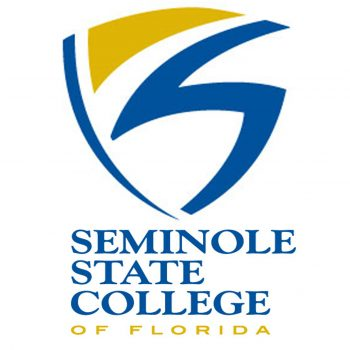

Objective
Senior Information Technology student specializing in cybersecurity, network defense, and secure computing. Seeking opportunities to apply hands on technical skills in security operations, threat analysis, and system administration within an IT or cybersecurity environment.
Education
University of Central Florida

Bachelor of Science, Information Technology - Anticipated Fall 2026
Seminole State College of Florida

Associate of Arts, 2023
Skills
- Cybersecurity: Cryptography, Cyber Defense Analysis, Secure Computing, Threat Detection & Response, Vulnerability Assessment.
- Networking: Subnetting, Routing & Switching, Network Configuration, Wireshark Packet Analysis
- Operating Systems: Windows, Linux, macOS, Virtualization (Oracle VirtualBox)
- Programming Languages: Java, C, Python, HTML, SQL
- Tools: Wireshark, MySQL, Microsoft SQL Server, Nmap, Microsoft Office Suite
Projects
Experience
Crisis Counselor, Crisis Text Line - Present
- Provide real time, text based emotional support to individuals in crisis using active listening and de escalation strategies.
- Spent 140+ hours supporting 200+ individuals while maintaining composure under pressure and adhering to strict safety and confidentiality protocols.
- Utilize structured risk assessment techniques to ensure user safety and appropriate escalation.
Job Shadow Experience
Command Post Technologies, Orlando, FL
- Observed professionals across Human Resources, Business Development, Cybersecurity/Engineering, Contracting, and Government/Policy.
- Gained insight into defense contracting workflows, cybersecurity roles, and required technical competencies.
- Learned about compliance, security clearances, and federal contracting processes.
Certifications
- IT Client Specialist Certification (2023)
- CompTIA TestOut CyberDefense Pro Certification
- CompTIA Network+ (In Progress, Anticipated Spring 2026)